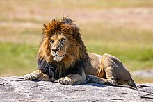

Elephant

Elephants are the largest living land animals. Three living species are currently recognised: the African bush elephant (Loxodonta africana), the African forest elephant (L. cyclotis), and the Asian elephant (Elephas maximus). They are the only surviving members of the family Elephantidae and the order Proboscidea; extinct relatives include mammoths and mastodons. Distinctive features of elephants include a long proboscis called a trunk, tusks, large ear flaps, pillar-like legs, and tough but sensitive grey skin. The trunk is prehensile, bringing food and water to the mouth and grasping objects. Tusks, which are derived from the incisor teeth, serve both as weapons and as tools for moving objects and digging. The large ear flaps assist in maintaining a constant body temperature as well as in communication. African elephants have larger ears and concave backs, whereas Asian elephants have smaller ears and convex or level backs.
Elephants are scattered throughout sub-Saharan Africa, South Asia, and Southeast Asia and are found in different habitats, including savannahs, forests, deserts, and marshes. They are herbivorous, and they stay near water when it is accessible. They are considered to be keystone species, due to their impact on their environments. Elephants have a fission-fusion society, in which multiple family groups come together to socialise. Females (cows) tend to live in family groups, which can consist of one female with her calves or several related females with offspring. The leader of a female group, usually the oldest cow, is known as the matriarch.
Males (bulls) leave their family groups when they reach puberty and may live alone or with other males. Adult bulls mostly interact with family groups when looking for a mate. They enter a state of increased testosterone and aggression known as musth, which helps them gain dominance over other males as well as reproductive success. Calves are the centre of attention in their family groups and rely on their mothers for as long as three years. Elephants can live up to 70 years in the wild. They communicate by touch, sight, smell, and sound; elephants use infrasound and seismic communication over long distances. Elephant intelligence has been compared with that of primates and cetaceans. They appear to have self-awareness, and possibly show concern for dying and dead individuals of their kind.
African bush elephants and Asian elephants are listed as endangered and African forest elephants as critically endangered by the International Union for Conservation of Nature (IUCN). One of the biggest threats to elephant populations is the ivory trade, as the animals are poached for their ivory tusks. Other threats to wild elephants include habitat destruction and conflicts with local people. Elephants are used as working animals in Asia. In the past, they were used in war; today, they are often controversially put on display in zoos, or employed for entertainment in circuses. Elephants have an iconic status in human culture and have been widely featured in art, folklore, religion, literature, and popular culture.
Evolution
Over 180 extinct members of order Proboscidea have been described.[14] The earliest proboscideans, the African Eritherium and Phosphatherium are known from the late Paleocene.[15] The Eocene included Numidotherium, Moeritherium, and Barytherium from Africa. These animals were relatively small and, some, like Moeritherium and Barytherium were probably amphibious.[16][17] Later on, genera such as Phiomia and Palaeomastodon arose; the latter likely inhabited more forested areas. Proboscidean diversification changed little during the Oligocene.[16] One notable species of this epoch was Eritreum melakeghebrekristosi of the Horn of Africa, which may have been an ancestor to several later species.
Proboscidea phylogeny based on morphological and DNA evidence[19][20][13]
A major event in proboscidean evolution was the collision of Afro-Arabia with Eurasia, during the Early Miocene, around 18-19 million years ago, allowing proboscideans to disperse from their African homeland across Eurasia and later, around 16-15 million years ago into North America across the Bering Land Bridge. Proboscidean groups prominent during the Miocene include the deinotheres, along with the more advanced elephantimorphs, including mammutids (mastodons), gomphotheres, amebelodontids (which includes the "shovel tuskers" like Platybelodon), choerolophodontids and stegodontids.[21] Around 10 million years ago, the earliest members of the family Elephantidae emerged in Africa, having originated from gomphotheres.[22]
Elephantids are distinguished from earlier proboscideans by a major shift in the molar morphology to parallel lophs rather than the cusps of earlier proboscideans, allowing them to become higher-crowned (hypsodont) and more efficient in consuming grass.[23] The Late Miocene saw major climactic changes, which resulted in the decline and extinction of many proboscidean groups.[21] The earliest members of the modern genera of Elephantidae appeared during the latest Miocene-early Pliocene around 5 million years ago. The elephantid genera Elephas (which includes the living Asian elephant) and Mammuthus (mammoths) migrated out of Africa during the late Pliocene, around 3.6 to 3.2 million years ago.[24]
Over the course of the Early Pleistocene, all non-elephantid probobscidean genera outside of the Americas became extinct with the exception of Stegodon,[21] with gomphotheres dispersing into South America as part of the Great American interchange,[25] and mammoths migrating into North America around 1.5 million years ago.[26] At the end of the Early Pleistocene, around 800,000 years ago the elephantid genus Palaeoloxodon dispersed outside of Africa, becoming widely distributed in Eurasia.[27] Proboscideans were represented by around 23 species at the beginning of the Late Pleistocene. Proboscideans underwent a dramatic decline during the Late Pleistocene as part of the Late Pleistocene extinctions of most large mammals globally, with all remaining non-elephantid proboscideans (including Stegodon, mastodons, and the American gomphotheres Cuvieronius and Notiomastodon) and Palaeoloxodon becoming extinct, with mammoths only surviving in relict populations on islands around the Bering Strait into the Holocene, with their latest survival being on Wrangel Island, where they persisted until around 4,000 years ago.[21][28]
Over the course of their evolution, probobscideans grew in size. With that came longer limbs and wider feet with a more digitigrade stance, along with a larger head and shorter neck. The trunk evolved and grew longer to provide reach. The number of premolars, incisors, and canines decreased, and the cheek teeth (molars and premolars) became longer and more specialised. The incisors developed into tusks of different shapes and sizes.[29] Several species of proboscideans became isolated on islands and experienced insular dwarfism,[30] some dramatically reducing in body size, such as the 1 m (3 ft 3 in) tall dwarf elephant species Palaeoloxodon falconeri.[31]
Hippopotamus
The hippopotamus (Hippopotamus amphibius) (/ˌhIpə'pɒtəməs/; pl.: hippopotamuses; also shortened to hippo (pl.: hippos), further qualified as the common hippopotamus, Nile hippopotamus, or river hippopotamus, is a large semiaquatic mammal native to sub-Saharan Africa. It is one of only two extant species in the family Hippopotamidae, the other being the pygmy hippopotamus (Choeropsis liberiensis or Hexaprotodon liberiensis). Its name comes from the ancient Greek for "river horse" (ἱπποπόταμος).
After elephants and rhinoceroses, the hippopotamus is the next largest land mammal. It is also the largest extant land artiodactyl. Despite their physical resemblance to pigs and other terrestrial even-toed ungulates, the closest living relatives of the hippopotamids are cetaceans (whales, dolphins, porpoises, etc.), from which they diverged about 55 million years ago. Hippos are recognisable for their barrel-shaped torsos, wide-opening mouths with large canine tusks, nearly hairless bodies, pillar-like legs, and large size: adults average 1,500 kg (3,300 lb) for bulls (males) and 1,300 kg (2,900 lb) for cows (females). Despite its stocky shape and short legs, it is capable of running 30 km/h (19 mph) over short distances.
Hippos inhabit rivers, lakes, and mangrove swamps. Territorial bulls each preside over a stretch of water and a group of five to thirty cows and calves. Mating and birth both occur in the water. During the day, hippos remain cool by staying in water or mud, emerging at dusk to graze on grasses. While hippos rest near each other in the water, grazing is a solitary activity and hippos typically do not display territorial behaviour on land. Hippos are among the most dangerous animals in the world due to their aggressive and unpredictable nature. They are threatened by habitat loss and poaching for their meat and ivory (canine teeth).
Evolution
Until 1909, naturalists classified hippos together with pigs based on molar patterns. Several lines of evidence, first from blood proteins, then from molecular systematics,[12] DNA[13][14] and the fossil record, show their closest living relatives are cetaceans (whales, dolphins, and porpoises).[15][16] The common ancestor of hippos and whales branched off from Ruminantia and the rest of the even-toed ungulates; the cetacean and hippo lineages split soon afterwards.[13][16]
Anthracotherium magnum from the Oligocene of Europe
The most recent theory of the origins of Hippopotamidae suggests hippos and whales shared a common semiaquatic ancestor that branched off from other artiodactyls around 60 million years ago.[13][15] This hypothesised ancestral group likely split into two branches again around 54 million years ago.[12]
One branch would evolve into cetaceans, possibly beginning about 52 million years ago, with the protowhale Pakicetus and other early whale ancestors collectively known as Archaeoceti. This group eventually underwent aquatic adaptation into the completely aquatic cetaceans.[16] The other branch became the anthracotheres, a large family of four-legged beasts, the earliest of which in the late Eocene would have resembled skinny hippos with comparatively smaller, narrower heads. All branches of the anthracotheres, except that which evolved into Hippopotamidae, became extinct during the Pliocene, leaving no descendants.[15][16]
A rough evolutionary lineage of the hippo can thus be traced from Eocene and Oligocene species: from Anthracotherium and Elomeryx to the Miocene species Merycopotamus and Libycosaurus and finally the very latest anthracotheres in the Pliocene.[17] These groups lived across Eurasia and Africa. The discovery of Epirigenys in East Africa, which was likely a descent of Asian anthracotheres and a sister taxon to Hippopotamidae, suggests that hippo ancestors entered Africa from Asia around 35 million years ago.[18][19] An early hippopotamid is the genus Kenyapotamus, which lived in Africa from 15 to 9 million years ago.[17] Hippopotamid species would spread across Africa and Eurasia, including the modern pygmy hippo. From 7.5 to 1.8 million years ago, a possible ancestor to the modern hippo, Archaeopotamus, lived in Africa and the Middle East.[20] The oldest records of the genus Hippopotamus date to the Pliocene (5.3-2.6 million years ago).[21] The oldest unambiguous records of the modern H. amphibius date to the Middle Pleistocene, though there are possible Early Pleistocene records.[22]
Lion

The lion (Panthera leo) is a large cat of the genus Panthera, native to Africa and India. It has a muscular, broad-chested body; a short, rounded head; round ears; and a dark, hairy tuft at the tip of its tail. It is sexually dimorphic; adult male lions are larger than females and have a prominent mane. It is a social species, forming groups called prides. A lion's pride consists of a few adult males, related females, and cubs. Groups of female lions usually hunt together, preying mostly on medium-sized and large ungulates. The lion is an apex and keystone predator; although some lions scavenge when opportunities occur and have been known to hunt humans, lions typically do not actively seek out and prey on humans.
The lion inhabits grasslands, savannahs, and shrublands. It is usually more diurnal than other wild cats, but when persecuted, it adapts to being active at night and at twilight. During the Neolithic period, the lion ranged throughout Africa and Eurasia, from Southeast Europe to India, but it has been reduced to fragmented populations in sub-Saharan Africa and one population in western India. It has been listed as Vulnerable on the IUCN Red List since 1996 because populations in African countries have declined by about 43% since the early 1990s. Lion populations are untenable outside designated protected areas. Although the cause of the decline is not fully understood, habitat loss and conflicts with humans are the greatest causes for concern.
One of the most widely recognised animal symbols in human culture, the lion has been extensively depicted in sculptures and paintings, on national flags, and in literature and films. Lions have been kept in menageries since the time of the Roman Empire and have been a key species sought for exhibition in zoological gardens across the world since the late 18th century. Cultural depictions of lions were prominent in Ancient Egypt, and depictions have occurred in virtually all ancient and medieval cultures in the lion's historic and current range.
Evolution
The Panthera lineage is estimated to have genetically diverged from the common ancestor of the Felidae around 9.32 to 4.47 million years ago to 11.75 to 0.97 million years ago.[6][32][33] Results of analyses differ in the phylogenetic relationship of the lion; it was thought to form a sister group with the jaguar that diverged 3.46 to 1.22 million years ago,[6] but also with the leopard that diverged 3.1 to 1.95 million years ago[8][9] to 4.32 to 0.02 million years ago. Hybridisation between lion and snow leopard ancestors possibly continued until about 2.1 million years ago.[33] The lion-leopard clade was distributed in the Asian and African Palearctic since at least the early Pliocene.[34] The earliest fossils recognisable as lions were found at Olduvai Gorge in Tanzania and are estimated to be up to 2 million years old.[32]
Estimates for the divergence time of the modern and cave lion lineages range from 529,000 to 392,000 years ago based on mutation rate per generation time of the modern lion. There is no evidence for gene flow between the two lineages, indicating that they did not share the same geographic area.[19] The Eurasian and American cave lions became extinct at the end of the last glacial period without mitochondrial descendants on other continents.[27][35][36] The modern lion was probably widely distributed in Africa during the Middle Pleistocene and started to diverge in sub-Saharan Africa during the Late Pleistocene. Lion populations in East and Southern Africa became separated from populations in West and North Africa when the equatorial rainforest expanded 183,500 to 81,800 years ago.[37] They shared a common ancestor probably between 98,000 and 52,000 years ago.[19] Due to the expansion of the Sahara between 83,100 and 26,600 years ago, lion populations in West and North Africa became separated. As the rainforest decreased and thus gave rise to more open habitats, lions moved from West to Central Africa. Lions from North Africa dispersed to southern Europe and Asia between 38,800 and 8,300 years ago.[37]
Extinction of lions in southern Europe, North Africa and the Middle East interrupted gene flow between lion populations in Asia and Africa. Genetic evidence revealed numerous mutations in lion samples from East and Southern Africa, which indicates that this group has a longer evolutionary history than genetically less diverse lion samples from Asia and West and Central Africa.[38] A whole genome-wide sequence of lion samples showed that samples from West Africa shared alleles with samples from Southern Africa, and samples from Central Africa shared alleles with samples from Asia. This phenomenon indicates that Central Africa was a melting pot of lion populations after they had become isolated, possibly migrating through corridors in the Nile Basin during the early Holocene.[19]
Wild boar
The wild boar (Sus scrofa), also known as the wild swine,[4] common wild pig,[5] Eurasian wild pig,[6] or simply wild pig,[7] is a suid native to much of Eurasia and North Africa, and has been introduced to the Americas and Oceania. The species is now one of the widest-ranging mammals in the world, as well as the most widespread suiform.[5] It has been assessed as least concern on the IUCN Red List due to its wide range, high numbers, and adaptability to a diversity of habitats.[1] It has become an invasive species in part of its introduced range. Wild boars probably originated in Southeast Asia during the Early Pleistocene[8] and outcompeted other suid species as they spread throughout the Old World.[9]
As of 2005, up to 16 subspecies are recognized, which are divided into four regional groupings based on skull height and lacrimal bone length.[2] The species lives in matriarchal societies consisting of interrelated females and their young (both male and female). Fully grown males are usually solitary outside the breeding season.[10] The wolf is the wild boar's main predator in most of its natural range except in the Far East and the Lesser Sunda Islands, where it is replaced by the tiger and Komodo dragon respectively.[11][12] The wild boar has a long history of association with humans, having been the ancestor of most domestic pig breeds and a big-game animal for millennia. Boars have also re-hybridized in recent decades with feral pigs; these boar-pig hybrids have become a serious pest wild animal in the Americas and Australia.
Evolution
MtDNA studies indicate that the wild boar originated from islands in Southeast Asia such as Indonesia and the Philippines, and subsequently spread onto mainland Eurasia and North Africa.[8] The earliest fossil finds of the species come from both Europe and Asia, and date back to the Early Pleistocene.[19] By the late Villafranchian, S. scrofa largely displaced the related S. strozzii, a large, possibly swamp-adapted suid ancestral to the modern S. verrucosus throughout the Eurasian mainland, restricting it to insular Asia.[9] Its closest wild relative is the bearded pig of Malacca and surrounding islands.[4]
Subspecies
As of 2005, 16 subspecies are recognised, which are divided into four regional groupings:[2]
Western: Includes S. s. scrofa, S. s. meridionalis, S. s. algira, S. s. attila, S. s. lybicus, S. s. majori and S. s. nigripes. These subspecies are typically high-skulled (though lybicus and some scrofa are low-skulled), with thick underwool and (excepting scrofa and attila) poorly developed manes.[21]
Indian: Includes S. s. davidi and S. s. cristatus. These subspecies have sparse or absent underwool, with long manes and prominent bands on the snout and mouth. While S. s. cristatus is high-skulled, S. s. davidi is low-skulled.[21]
Eastern: Includes S. s. sibiricus, S. s. ussuricus, S. s. leucomystax, S. s. riukiuanus, S. s. taivanus and S. s. moupinensis. These subspecies are characterised by a whitish streak extending from the corners of the mouth to the lower jaw. With the exception of S. s. ussuricus, most are high-skulled. The underwool is thick, except in S. s. moupinensis, and the mane is largely absent.[21]
Indonesian: Represented solely by S. s. vittatus, it is characterised by its sparse body hair, lack of underwool, fairly long mane, a broad reddish band extending from the muzzle to the sides of the neck.[21] It is the most basal of the four groups, having the smallest relative brain size, more primitive dentition and unspecialised cranial structure.[22]
Monkey

Monkey is a common name that may refer to most mammals of the infraorder Simiiformes, also known as simians. Traditionally, all animals in the group now known as simians are counted as monkeys except the apes. Thus monkeys, in that sense, constitute an incomplete paraphyletic grouping; however, in the broader sense based on cladistics, apes (Hominoidea) are also included, making the terms monkeys and simians synonyms in regard to their scope.
In 1812, Étienne Geoffroy grouped the apes and the Cercopithecidae group of monkeys together and established the name Catarrhini, "Old World monkeys" ("singes de l'Ancien Monde" in French).[3][4][5] The extant sister of the Catarrhini in the monkey ("singes") group is the Platyrrhini (New World monkeys).[3] Some nine million years before the divergence between the Cercopithecidae and the apes,[6] the Platyrrhini emerged within "monkeys" by migration to South America from Afro-Arabia (the Old World),[citation needed][7][8] likely by ocean.[9][10][better source needed] Apes are thus deep in the tree of extant and extinct monkeys, and any of the apes is distinctly closer related to the Cercopithecidae than the Platyrrhini are.
Many monkey species are tree-dwelling (arboreal), although there are species that live primarily on the ground, such as baboons. Most species are mainly active during the day (diurnal). Monkeys are generally considered to be intelligent, especially the Old World monkeys.
Within suborder Haplorhini, the simians are a sister group to the tarsiers - the two members diverged some 70 million years ago.[11] New World monkeys and catarrhine monkeys emerged within the simians roughly 35 million years ago. Old World monkeys and apes emerged within the catarrhine monkeys about 25 million years ago. Extinct basal simians such as Aegyptopithecus or Parapithecus (35-32 million years ago) are also considered monkeys by primatologists.
Lemurs, lorises, and galagos are not monkeys, but strepsirrhine primates (suborder Strepsirrhini). The simians' sister group, the tarsiers, are also haplorhine primates; however, they are also not monkeys.
Apes emerged within monkeys as sister of the Cercopithecidae in the Catarrhini, so cladistically they are monkeys as well. However, there has been resistance to directly designate apes (and thus humans) as monkeys, so "Old World monkey" may be taken to mean either the Cercopithecoidea (not including apes) or the Catarrhini (including apes). That apes are monkeys was already realized by Georges-Louis Leclerc, Comte de Buffon in the 18th century.[26] Linnaeus placed this group in 1758 together with the tarsiers, in a single genus "Simia" (sans Homo), an ensemble now recognised as the Haplorhini.[27]
Monkeys, including apes, can be distinguished from other primates by having only two pectoral nipples, a pendulous penis, and a lack of sensory whiskers.
Leopard
The leopard (Panthera pardus) is one of the five extant species in the genus Panthera. It has a pale yellowish to dark golden fur with dark spots grouped in rosettes. Its body is slender and muscular reaching a length of 92-183 cm (36-72 in) with a 66-102 cm (26-40 in) long tail and a shoulder height of 60-70 cm (24-28 in). Males typically weigh 30.9-72 kg (68-159 lb), and females 20.5-43 kg (45-95 lb).
The leopard was first described in 1758, and several subspecies were proposed in the 19th and 20th centuries. Today, eight subspecies are recognised in its wide range in Africa and Asia. It initially evolved in Africa during the Early Pleistocene, before migrating into Eurasia around the Early-Middle Pleistocene transition. Leopards were formerly present across Europe, but became extinct in the region at around the end of the Late Pleistocene-early Holocene.
The leopard is adapted to a variety of habitats ranging from rainforest to steppe, including arid and montane areas. It is an opportunistic predator, hunting mostly ungulates and primates. It relies on its spotted pattern for camouflage as it stalks and ambushes its prey, which it sometimes drags up a tree. It is a solitary animal outside the mating season and when raising cubs. Females usually give birth to a litter of 2-4 cubs once in 15-24 months. Both male and female leopards typically reach sexual maturity at the age 2-2.5 years.
Listed as Vulnerable on the IUCN Red List, leopard populations are currently threatened by habitat loss and fragmentation, and are declining in large parts of the global range. Leopards have had cultural roles in Ancient Egypt, Nubia, Ancient Greece, West Africa and modern Western culture. Leopard skins are popular in fashion.
Evolution
Results of phylogenetic studies based on nuclear DNA and mitochondrial DNA analysis showed that the last common ancestor of the Panthera and Neofelis genera is thought to have lived about 6.37 million years ago. Neofelis diverged about 8.66 million years ago from the Panthera lineage. The tiger diverged about 6.55 million years ago, followed by the snow leopard about 4.63 million years ago and the leopard about 4.35 million years ago. The leopard is a sister taxon to a clade within Panthera, consisting of the lion and the jaguar.
Results of a phylogenetic analysis of chemical secretions amongst cats indicated that the leopard is closely related to the lion.[40] The geographic origin of the Panthera is most likely northern Central Asia. The leopard-lion clade was distributed in the Asian and African Palearctic since at least the early Pliocene.[41] The leopard-lion clade diverged 3.1-1.95 million years ago.[38][39] Additionally, a 2016 study revealed that the mitochondrial genomes of the leopard, lion and snow leopard are more similar to each other than their nuclear genomes, indicating that their ancestors hybridized with the snow leopard at some point in their evolution.
The oldest unambiguous fossils of the leopard are from Eastern Africa, dating to around 2 million years ago.
Leopard-like fossil bones and teeth possibly dating to the Pliocene were excavated in Perrier in France, northeast of London, and in Valdarno, Italy. Until 1940, similar fossils dating back to the Pleistocene were excavated mostly in loess and caves at 40 sites in Europe, including Furninha Cave near Lisbon, Genista Caves in Gibraltar, and Santander Province in northern Spain to several sites across France, Switzerland, Italy, Austria, Germany, in the north up to Derby in England, in the east to Přerov in the Czech Republic and the Baranya in southern Hungary.[44] Leopards arrived in Eurasia during the late Early to Middle Pleistocene around 1.2[45] to 0.6 million years ago.[43] Four European Pleistocene leopard subspecies were proposed. P. p. begoueni from the beginning of the Early Pleistocene was replaced about 0.6 million years ago by P. p. sickenbergi, which in turn was replaced by P. p. antiqua around 0.3 million years ago.[46] P. p. spelaea is the most recent subspecies that appeared at the beginning of the Late Pleistocene and survived until about 11,000 years ago and possibly into the early Holocene in the Iberian Peninsula.
Leopards depicted in cave paintings in Chauvet Cave provide indirect evidence of leopard presence in Europe.[46] Leopard fossils dating to the Late Pleistocene were found in Biśnik Cave in south-central Poland.[48][45] Fossil remains were also excavated in the Iberian[49][50] and Italian Peninsula,[51] and in the Balkans.[52][53] Leopard fossils dating to the Pleistocene were also excavated in the Japanese archipelago.[54] Leopard fossils were also found in Taiwan
Wolf
The wolf (Canis lupus;[b] pl.: wolves), also known as the gray wolf or grey wolf, is a canine native to Eurasia and North America. More than thirty subspecies of Canis lupus have been recognized, including the dog and dingo, though gray wolves, as popularly understood, only comprise naturally-occurring wild subspecies. The wolf is the largest wild extant member of the family Canidae, and is further distinguished from other Canis species by its less pointed ears and muzzle, as well as a shorter torso and a longer tail. The wolf is nonetheless related closely enough to smaller Canis species, such as the coyote and the golden jackal, to produce fertile hybrids with them. The wolf's fur is usually mottled white, brown, gray, and black, although subspecies in the arctic region may be nearly all white.
Of all members of the genus Canis, the wolf is most specialized for cooperative game hunting as demonstrated by its physical adaptations to tackling large prey, its more social nature, and its highly advanced expressive behaviour, including individual or group howling. It travels in nuclear families consisting of a mated pair accompanied by their offspring. Offspring may leave to form their own packs on the onset of sexual maturity and in response to competition for food within the pack. Wolves are also territorial, and fights over territory are among the principal causes of mortality. The wolf is mainly a carnivore and feeds on large wild hooved mammals as well as smaller animals, livestock, carrion, and garbage. Single wolves or mated pairs typically have higher success rates in hunting than do large packs. Pathogens and parasites, notably the rabies virus, may infect wolves.
The global wild wolf population was estimated to be 300,000 in 2003 and is considered to be of Least Concern by the International Union for Conservation of Nature (IUCN). Wolves have a long history of interactions with humans, having been despised and hunted in most pastoral communities because of their attacks on livestock, while conversely being respected in some agrarian and hunter-gatherer societies. Although the fear of wolves exists in many human societies, the majority of recorded attacks on people have been attributed to animals suffering from rabies. Wolf attacks on humans are rare because wolves are relatively few, live away from people, and have developed a fear of humans because of their experiences with hunters, farmers, ranchers, and shepherds.
Evolution
The phylogenetic descent of the extant wolf C. lupus from the earlier C. mosbachensis (which in turn descended from C. etruscus) is widely accepted.[14] Among the oldest fossils of the modern grey wolf is from Ponte Galeria in Italy, dating to 406,500±2,400 years ago.[15] Remains from Cripple Creek Sump in Alaska may be considerably older, around 1 million years old,[16] though differentiating between the remains of modern wolves and C. mosbachensis is difficult and ambiguous, with some authors choosing to include C. mosbachensis (which first appeared around 1.4 million years ago) as an early subspecies of C. lupus.
Considerable morphological diversity existed among wolves by the Late Pleistocene. Many Late Pleistocene wolf populations had more robust skulls and teeth than modern wolves, often with a shortened snout, a pronounced development of the temporalis muscle, and robust premolars. It is proposed that these features were specialized adaptations for the processing of carcass and bone associated with the hunting and scavenging of Pleistocene megafauna. Compared with modern wolves, some Pleistocene wolves showed an increase in tooth breakage similar to that seen in the extinct dire wolf. This suggests they either often processed carcasses, or that they competed with other carnivores and needed to consume their prey quickly. The frequency and location of tooth fractures in these wolves indicates they were habitual bone crackers like the modern spotted hyena.
Genomic studies suggest modern wolves and dogs descend from a common ancestral wolf population.[18][19][20] A 2021 study found that the Himalayan wolf and the Indian plains wolf are part of a lineage that is basal to other wolves and split from them 200,000 years ago.[21] Other wolves appear to share most of their common ancestry much more recently, within the last 23,000 years (around the peak and the end of the Last Glacial Maximum), originating from Siberia[22] or Beringia.[23] While some sources have suggested that this was a consequence of a population bottleneck,[23] other studies have suggested that this a result of gene flow homogenising ancestry.
A 2016 genomic study suggests that Old World and New World wolves split around 12,500 years ago followed by the divergence of the lineage that led to dogs from other Old World wolves around 11,100-12,300 years ago.[20] An extinct Late Pleistocene wolf may have been the ancestor of the dog,[24][17] with the dog's similarity to the extant wolf being the result of genetic admixture between the two.[17] The dingo, Basenji, Tibetan Mastiff and Chinese indigenous breeds are basal members of the domestic dog clade. The divergence time for wolves in Europe, the Middle East, and Asia is estimated to be fairly recent at around 1,600 years ago. Among New World wolves, the Mexican wolf diverged around 5,400 years ago.
Hyena
Hyenas or hyaenas (/haI'i:nəz/ hi-EE-nəz; from Ancient Greek ὕαινα, hýaina) are feliform carnivoran mammals belonging to the family Hyaenidae (/haI'ɛnIdi:/). With just four extant species (each in its own genus), it is the fifth-smallest family in the order Carnivora and one of the smallest in the class Mammalia.[2] Despite their low diversity, hyenas are unique and vital components of most African ecosystems.
Although phylogenetically closer to felines and viverrids, hyenas are behaviourally and morphologically similar to canids in several elements due to convergent evolution: both hyenas and canines are non-arboreal, cursorial hunters that catch prey with their teeth rather than claws. Both eat food quickly and may store it, and their calloused feet with large, blunt, nonretractable claws are adapted for running and making sharp turns. However, hyenas' grooming, scent marking, defecation habits, mating and parental behavior are consistent with the behavior of other feliforms.
Hyenas feature prominently in the folklore and mythology of human cultures that live alongside them. Hyenas are commonly viewed as frightening and worthy of contempt. In some cultures, hyenas are thought to influence people's spirits, rob graves, and steal livestock and children.[5] Other cultures associate them with witchcraft, using their body parts in traditional medicine.
Evolution
Hyenas originated in the jungles of Miocene Eurasia 22 million years ago, when most early feliform species were still largely arboreal. The first ancestral hyenas were likely similar to the modern African civet; one of the earliest hyena species described, Plioviverrops, was a lithe, civet-like animal that inhabited Eurasia 20-22 million years ago, and is identifiable as a hyaenid by the structure of the middle ear and dentition. The lineage of Plioviverrops prospered, and gave rise to descendants with longer legs and more pointed jaws, a direction similar to that taken by canids in North America.[7] Hyenas then diversified into two distinct types: lightly built dog-like hyenas and robust bone-crushing hyenas. Although the dog-like hyenas thrived 15 million years ago (with one taxon having colonised North America), they became extinct after a change in climate, along with the arrival of canids into Eurasia. Of the dog-like hyena lineage, only the insectivorous aardwolf survived, while the bone-crushing hyenas (including the extant spotted, brown and striped hyenas) became the undisputed top scavengers of Eurasia and Africa.
ReturnZebra
Zebras (US: /"zi:brəz/, UK: /'zɛbrəz, 'zi:-/)[2] (subgenus Hippotigris) are African equines with distinctive black-and-white striped coats. There are three living species: Grévy's zebra (Equus grevyi), the plains zebra (E. quagga), and the mountain zebra (E. zebra). Zebras share the genus Equus with horses and asses, the three groups being the only living members of the family Equidae. Zebra stripes come in different patterns, unique to each individual. Several theories have been proposed for the function of these patterns, with most evidence supporting them as a deterrent for biting flies. Zebras inhabit eastern and southern Africa and can be found in a variety of habitats such as savannahs, grasslands, woodlands, shrublands, and mountainous areas.
Zebras are primarily grazers and can subsist on lower-quality vegetation. They are preyed on mainly by lions, and typically flee when threatened but also bite and kick. Zebra species differ in social behaviour, with plains and mountain zebra living in stable harems consisting of an adult male or stallion, several adult females or mares, and their young or foals; while Grévy's zebra live alone or in loosely associated herds. In harem-holding species, adult females mate only with their harem stallion, while male Grévy's zebras establish territories which attract females and the species is promiscuous. Zebras communicate with various vocalisations, body postures and facial expressions. Social grooming strengthens social bonds in plains and mountain zebras.
Zebras' dazzling stripes make them among the most recognisable mammals. They have been featured in art and stories in Africa and beyond. Historically, they have been highly sought by exotic animal collectors, but unlike horses and donkeys, zebras have never been completely domesticated. The International Union for Conservation of Nature (IUCN) lists Grévy's zebra as endangered, the mountain zebra as vulnerable and the plains zebra as near-threatened. The quagga (E. quagga quagga), a type of plains zebra, was driven to extinction in the 19th century. Nevertheless, zebras can be found in numerous protected areas.
Evolution
Zebras are classified in the genus Equus (known as equines) along with horses and asses. These three groups are the only living members of the family Equidae.[9] The plains zebra and mountain zebra were traditionally placed in the subgenus Hippotigris (C. H. Smith, 1841) in contrast to the Grévy's zebra which was considered the sole species of subgenus Dolichohippus (Heller, 1912).[10][11][12] Groves and Bell (2004) placed all three species in the subgenus Hippotigris.[13] A 2013 phylogenetic study found that the plains zebra is more closely related to Grévy's zebras than mountain zebras.[14] The extinct quagga was originally classified as a distinct species.[15] Later genetic studies have placed it as the same species as the plains zebra, either a subspecies or just the southernmost population.[16][17] Molecular evidence supports zebras as a monophyletic lineage.
Equus originated in North America and direct paleogenomic sequencing of a 700,000-year-old middle Pleistocene horse metapodial bone from Canada implies a date of 4.07 million years ago (mya) for the most recent common ancestor of the equines within a range of 4.0 to 4.5 mya.[20] Horses split from asses and zebras around this time and equines colonised Eurasia and Africa around 2.1-3.4 mya. Zebras and asses diverged from each other close to 2 mya. The mountain zebra diverged from the other species around 1.6 mya and the plains and Grévy's zebra split 1.4 mya.
A 2017 mitochondrial DNA study placed the Eurasian Equus ovodovi and the subgenus Sussemionus lineage as closer to zebras than to asses.[22] However, other studies disputed this placement, finding the Sussemionus lineage basal to the zebra+asses group, but suggested that the Sussemionus lineage may have received gene flow from zebras.
Capybara
The capybara[a] or greater capybara (Hydrochoerus hydrochaeris) is the largest living rodent,[2] native to South America. It is a member of the genus Hydrochoerus. The only other extant member is the lesser capybara (Hydrochoerus isthmius). Its close relatives include guinea pigs and rock cavies, and it is more distantly related to the agouti, the chinchilla, and the nutria. The capybara inhabits savannas and dense forests, and lives near bodies of water. It is a highly social species and can be found in groups as large as 100 individuals, but usually live in groups of 10–20 individuals. The capybara is hunted for its meat and hide and also for grease from its thick fatty skin.
Return